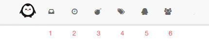

Üst
Eğer yeni kayıt olduysan okunmamış (1) sayfasında son 2 hafta içerisinde aktif bulunan başlıkları görebilirsin. Kaç başlık olduğunu ikonun altındaki kırmızı kutucuktan görebilirsin.
Yeni sayfasında (2) en son ileti gönderilmiş içerikleri sırasıyla görebilirsin. Popüler sayfasında (3) gönderiler ileti sayısına göre sıralanır. Varsayılan olarak haftanın popüler olan başlıkları gösterilir. Dilersen alt sekmelerden bunu değiştirebilirsin.
Etiketler sayfasında (4) gönderi ve iletilere eklenmiş bütün etiketleri görebilirsin. Bu alanda etiketler arasında arama yapabilirsin.
Kullanıcılar sayfasında (5) Timuu’da bulunan diğer uu’ları görebilir, inceleyebilirsin. Varsayılan olarak ilk tıkladığında en son kayıt olan kullanıcılar sıralanır. Alt sekmelerden bunu değiştirebilirsin.
Gruplar sayfasında (6) Timuu’da bulunan grupları görebilir, dilediğine katılabilirsin. Grupların kendisine özel alanları olabilir. Bazı gruplar kapalı veya gizli olabilir.
Gönderi ve İleti
Yeni sayfası ve kategori içerisinde sağ üst taraftaki “Yeni Başlık” butonuna tıklayarak yeni başlık açabilirsin.
Başlığın içerisindeki “Cevap” butonları ile yeni bir ileti girebilirsin. Ayrıca iletilerin altındaki “cevap” bağlantı ile de bir başka kullanıcıya odaklı bir ileti girebilirsin.
Düzenleyici markdown tabanlıdır. Düzenleyici üzerindeki ayarlardan iletini kişiselleştirebilirsin. Ayrıca görsel yüklemek için “Görsel Yükle” butonunu kullanabilirsin. Yüklediğin görseller Timuu’nun sunucusunda saklanır.
Aksiyon
Bizim için hareket çok önemli! Timuu gerçek zamanlı bir topluluktur. Bir aksiyon gerçekleştiğinde bir sayfayı yenilemeksizin görebilirsin. Timuu’da biri senden bahsederse, senin başlığında yeni bir hareket gerçekleşirse, takip ettiğin kişiler yeni bir başlık açarsa, bir başlığa veya kategoriye abone olursa sana bildiri gelir.
Ayrıca sohbet özelliğinden bahsetmessek olmaz. Timuu’da bir başka kullanıcı ile rahatlıkla sohbet edebilirsin. İstersen grup şeklinde konuşabilirsin.
Ayarlar
İşte ayarlar kısmında yapabileceklerin! Hazır Derilerden birini seçerek kendine göre sitenin tema renklerini kişiselleştirebilirsin. Gizlilik ayarlarını buradan kontrol edebilir ve diğer kişiler ile hangi bilgilerini paylaşmak istediğine sen karar verebilirsin.
Sohbet bildirimlerinin uyarı seslerini buradan seçebilir ve kişiselleştirebilirsin. Sen yokken Timuu’da neler olduğunu merak ediyorsan, e-bülten özelliğini aktif edebilir böylece takipte kalabilirsin.